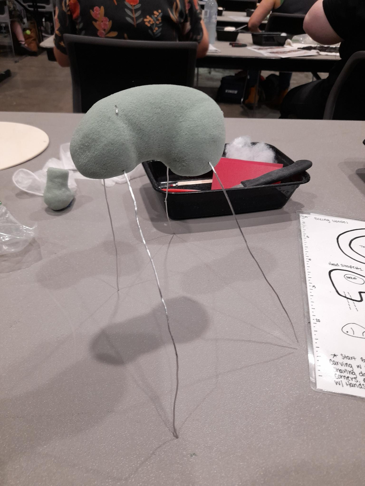
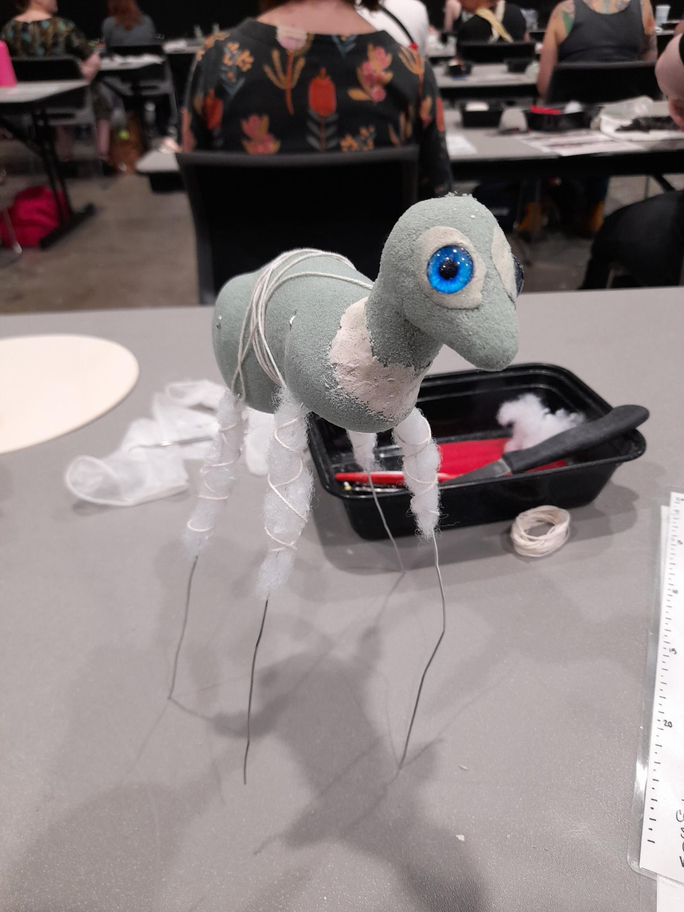

in december we had the oddities and curiosities expo in town, and with them were some people from
sleeping sirens leading a taxidermy
workshop—two, actually—one on a rabbit, and one on a rat, but i only went to the rabbit one.
some of the steps are detailed below.
general process
remove & tan the hide (already done)
create shape for head out of florists' foam
make eye socket dents, fill with clay & place eyes
shape body; stick wires through where the legs come out
(loop other ends around so it catches in the foam)
wrap polyfill around legs; wrap twine around polyfill to keep it in place
use a stick to attach head to body
take out some foam at the mouth; fill with clay
ensure hide is dry and brushed on outside (but don't hairdry the face yet as it'll shrink)
roll hide over foam creature
fill legs
sew hide together at spine
position on mount
card ears; fix face details; pin
wait a fortnight

the body shape, made out of florists' foam, plus very long wire legs

the accursed creature, doing its best impression of a haunted victorian boy